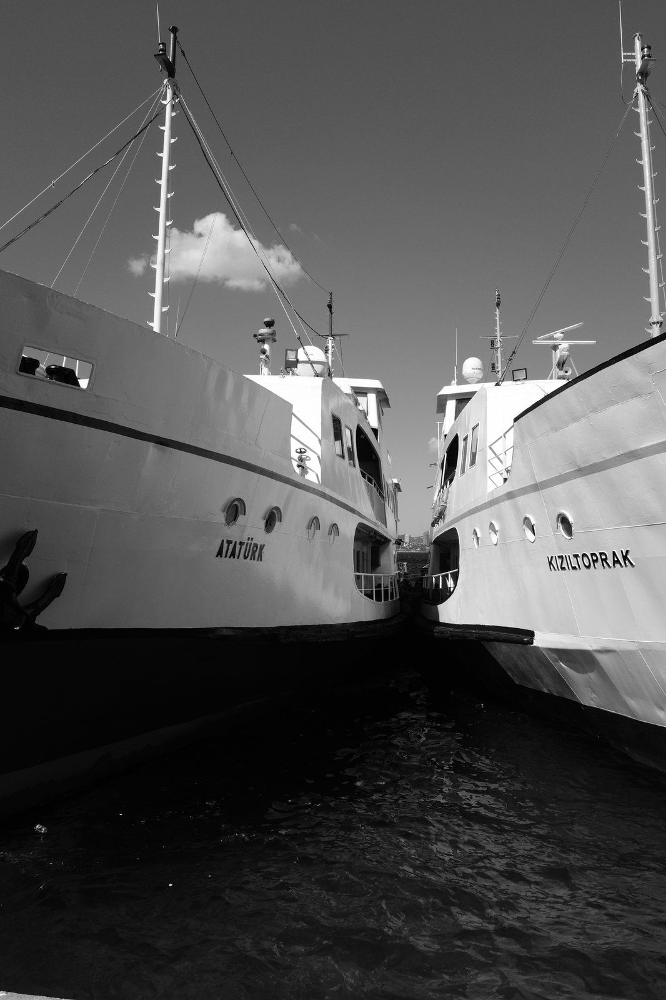
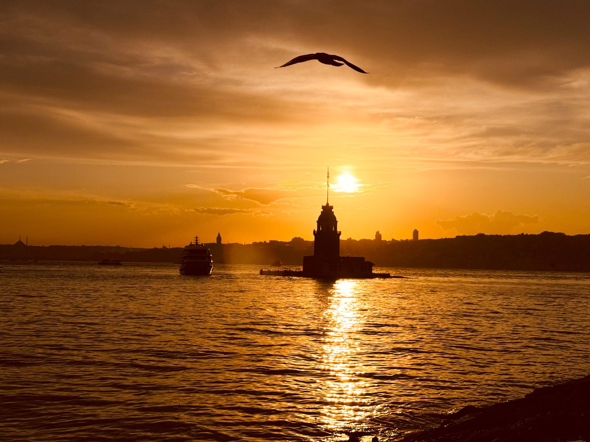
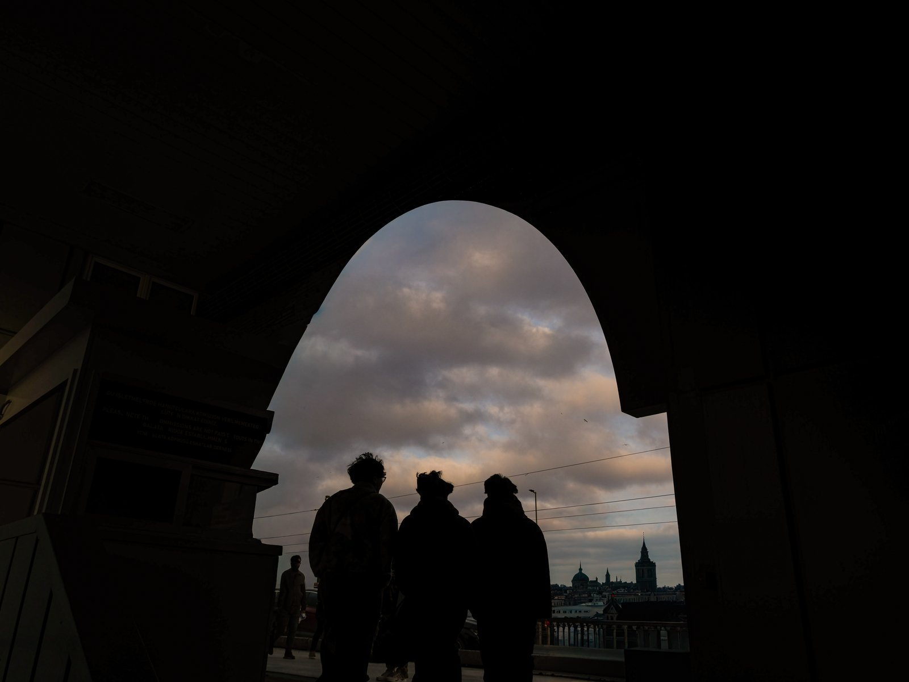
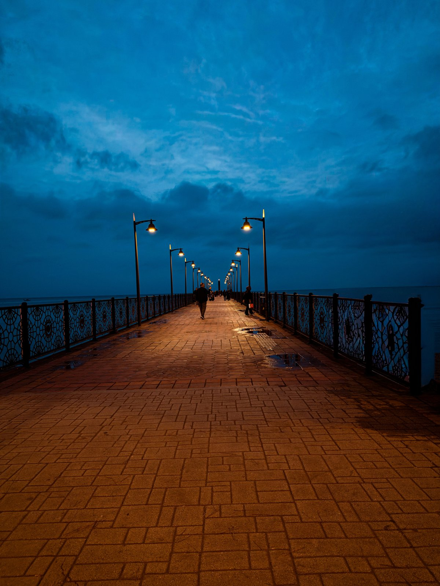

“Gördüğümle hatırladığım arasındaki boşlukta çektiğim fotoğraflar ve onların hikâyeleri.”

Işık, gölge ve sessizlik üzerine siyah-beyaz kareler.

Gördüğümüzle gerçek sandığımız şey arasındaki belirsiz çizgi.

Farklı zamanlardan, farklı hikâyelerden seçilmiş fotoğraflar.

Son çekimlerimden yeni karşılaşmalar ve yeni izler.